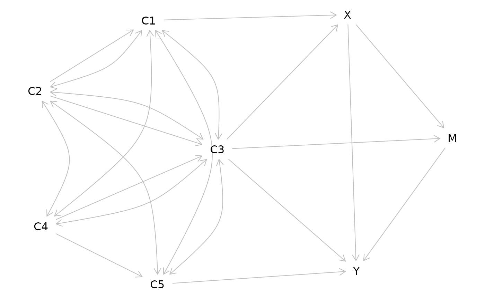

The lavaan package is a popular package for structural equation
modeling. To provide interoperability with lavaan, this function
converts models specified in lavaan syntax to dagitty graphs.
Arguments
- x
data frame, lavaan parameter table such as returned by
lavaanify. Can also be alavaanobject or a lavaan model string.- digits
number of significant digits to use when representing path coefficients, if any
- ...
Not used.
Examples
if( require(lavaan) ){
mdl <- lavaanify("
X ~ C1 + C3
M ~ X + C3
Y ~ X + M + C3 + C5
C1 ~ C2
C3 ~ C2 + C4
C5 ~ C4
C1 ~~ C2 \n C1 ~~ C3 \n C1 ~~ C4 \n C1 ~~ C5
C2 ~~ C3 \n C2 ~~ C4 \n C2 ~~ C5
C3 ~~ C4 \n C3 ~~ C5",fixed.x=FALSE)
plot( lavaanToGraph( mdl ) )
}
#> Loading required package: lavaan
#> This is lavaan 0.6-21
#> lavaan is FREE software! Please report any bugs.
#> Plot coordinates for graph not supplied! Generating coordinates, see ?coordinates for how to set your own.
